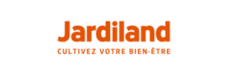

<div id="single-portfolio">
	<div id="portfolio-details" class="container">
		<a class="close-folio-item" href="#"><i class="fa fa-times"></i></a>
		
		<div class="row">
			<div class="col-sm-9">
				<div class="project-info">
					<h3>Jardiland</h3>
					<p>App and Go est intervenu avec la société Distreeb pour la création de la marketplace JMarket</p>
					<p>Un autre projet a été fait en régis pour la gestion d'étiquettes de produit.</p>
					<p>Une Application mobile a été faite pour les salons des exposants, l'application permettait aux franchises de scanner les produits du salon et de les ajouter dans leur panier de commande.</p>
				</div>
			</div>
			<div class="col-sm-3">
				<div class="project-details">
					<h3>Details du projet</h3>
					<p><span>Projet: </span>MarketPlace ,Site Intranet , Application mobile</p>
					<p><span>Date:</span>Septembre 2016 - Juin 2016</p>
					<p><span>Liens:</span><a href="https://www.jardiland.com/"> Jardiland</a></p>
					<!-- <p><span>Tag:</span> Graphic, Design, Creative</p> -->
				</div>  
			</div>
		</div>
	</div>
</div>